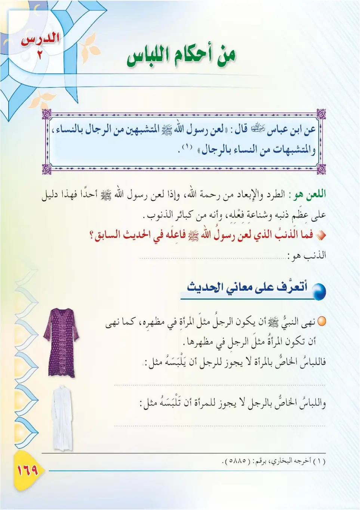
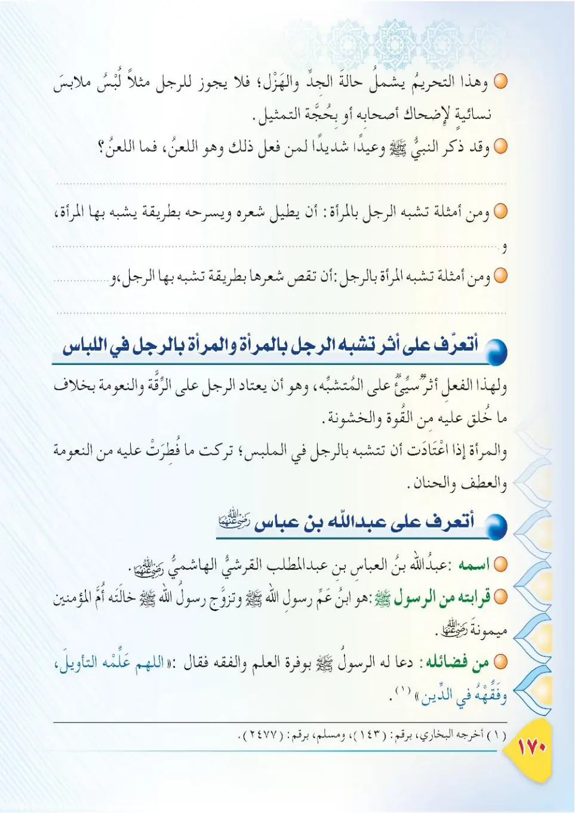
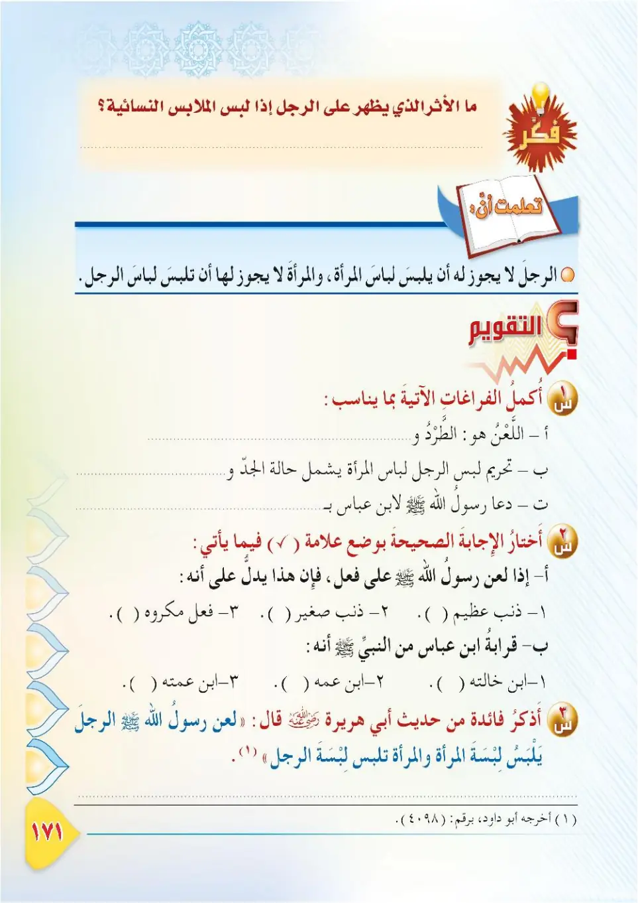

Stage 3·المرحلة الثالثة📖 Unit 5
أَحْكَامُ اللِّبَاسِ The Rules of Clothing
From the Textbookpp. 170–172



للِّباسِ أحكامٌ وآدابٌ تجعَلُ المسلمَ محترمًا، صحيحَ الذوقِ؛ فيتحلَّى بها في حياتِه. نَتَعرَّفُ في هذا الدرسِ على بعضِ أحكامِ اللباسِ.
Lil-libasi ahkamun wa adabun taj'alu al-muslima muhtaraman, sahiha adh-dhawq; fayatahalla biha fi hayatih. Nata'arrafu fi hadha ad-dars 'ala ba'di ahkamu al-libas.
Clothing has rules and etiquettes that make the Muslim respectable and tasteful; he adorns himself with them throughout his life. In this lesson we will learn about some of the rules of clothing.
உடைக்கு விதிகள், வழிமுறைகள் உள்ளன; அவை முஸ்லிமை மரியாதையானவராகவும், நற்சுவையாளராகவும் ஆக்குகின்றன. இந்தப் பாடத்தில் உடையின் சில விதிகளை அறிவோம்.
عن ابنِ عباسٍ رضي الله عنهُما قال: «لَعَنَ رسولُ اللهِ ﷺ الْمُتَشَبِّهِينَ مِنَ الرِّجَالِ بِالنِّسَاءِ، وَالْمُتَشَبِّهَاتِ مِنَ النِّسَاءِ بِالرِّجَالِ». أخرجه البخاري.
'Ani ibn 'Abbasa radiyallahu 'anhuma qal: «La'ana rasulullahi ﷺ al-mutashabbiheena mina ar-rijali bin-nisa', wal-mutashabbihati mina an-nisa' bir-rijal». Akhrajahu al-Bukhari.
Ibn 'Abbas, may Allah be pleased with them both, said: "The Messenger of Allah ﷺ cursed the men who imitate women, and the women who imitate men." Narrated by Al-Bukhari.
இப்னு அப்பாஸ் (ரலி) கூறினார்கள்: "பெண்களைப் பின்பற்றும் ஆண்களையும், ஆண்களைப் பின்பற்றும் பெண்களையும் அல்லாஹ்வின் தூதர் ﷺ சபித்தார்கள்." (புகாரி)
اللعنُ في الحديثِ دليلٌ على أنَّ التشبُّهَ بينَ الرجالِ والنساءِ في اللباسِ من الكبائرِ؛ قال تعالى: «وَلَيْسَ الذَّكَرُ كَالْأُنثَىٰ». فريمِ الرجالِ التشبُّهُ بالنساءِ في لباسِهم، والعكسُ بالعكسِ.
Al-la'nu fil-hadith daliilun 'ala anna at-tashabbaha bayna ar-rijali wan-nisa' fil-libas mina al-kaba'ir; qala ta'ala: «Wa laysa adh-dhakaru kal-untha». Fayirimu ar-rijali at-tashabbuhu bin-nisa'i fi libasihim, wal-'aksu bil-'aks.
The curse (la'n) in the hadith shows that men imitating women and women imitating men in clothing is among the major sins. Allah said: "And the male is not like the female." Therefore it is prohibited for men to imitate women in their clothing, and vice versa.
ஹதீஸில் உள்ள சாபம், ஆண் பெண் வேறுபாட்டை உடையில் கடைப்பிடிக்காவிட்டால் அது பெரும் பாவங்களில் ஒன்று என்பதைக் காட்டுகிறது. அல்லாஹ் கூறினான்: "ஆண் பெண்ணைப் போன்றவன் அல்ல." எனவே ஆண்கள் பெண்களைப் போல் உடையணிவதும், எதிர்மாறானதும் தடுக்கப்பட்டது.
وعن أبي هريرةَ رضي الله عنه قال: «لَعَنَ رسولُ اللهِ ﷺ الرَّجُلَ يَلْبَسُ لِبْسَةَ الْمَرْأَةِ، وَالْمَرْأَةَ تَلْبَسُ لِبْسَةَ الرَّجُلِ». أخرجه أبو داود.
Wa 'an Abi Hurayrata radiyallahu 'anhu qal: «La'ana rasulullahi ﷺ ar-rajula yalbasu libsata al-mar'ah, wal-mar'ata talbasu libsata ar-rajul». Akhrajahu Abu Dawud.
Abu Hurairah, may Allah be pleased with him, said: "The Messenger of Allah ﷺ cursed the man who wears women's clothing, and the woman who wears men's clothing." Narrated by Abu Dawud.
அபூஹுரைரா (ரலி) கூறினார்கள்: "பெண்களின் உடையை அணியும் ஆணையும், ஆண்களின் உடையை அணியும் பெண்ணையும் அல்லாஹ்வின் தூதர் ﷺ சபித்தார்கள்." (அபூதாவூத்)
من أحكامِ اللباسِ: ١- أن يكونَ نظيفًا وأنيقًا، وأن يجعلَ المسلمَ يحترمُ نفسَه ويرضي ربَّه. ٢- أن يلبسَ المسلمُ ما يليقُ به؛ فيُظهِرَ نعمةَ اللهِ عليه دونَ تكبُّرٍ ولا فخرٍ. ٣- النهيُ عن لبسِ ثوبِ الشُّهرةِ، وهو الثوبُ الذي فيه مباهاةٌ وفخرٌ وتلوينٌ.
Min ahkami al-libas: 1. an yakuna nadifan wa aniqan, wa an yaj'ala al-muslima yahtaramu nafsah wa yurdi rabbah. 2. an yalbasu al-muslimu ma yaliq bih; fa-yudhira ni'mata Allahi 'alayh duna takabburin wa la fakhr. 3. an-nahyu 'an lubsi thawbi ash-shuhrah, wa huwa ath-thawbu alladhi fihi mubahatun wa fakhrun wa talwinun.
Among the rules of clothing:<br>1. Clothes must be clean and neat, making the Muslim respect himself and please his Lord.<br>2. The Muslim should wear what suits him, showing the blessing of Allah upon him without arrogance or pride.<br>3. It is forbidden to wear the garment of fame (thawb ash-shuhrah), which is a garment of ostentation, pride, and showiness.
உடையின் விதிகளில்:<br>1. சுத்தமாகவும், அழகாகவும் இருக்க வேண்டும்; முஸ்லிம் தன்னை மதிக்கவும், தம் இறைவனை திருப்திப்படுத்தவும் செய்வது.<br>2. தமக்கு உகந்ததை அணிவது; கர்வமின்றி அல்லாஹ்வின் அருளை வெளிப்படுத்துவது.<br>3. 'தவ்பு ஷுஹ்ரா' (புகழ்/ஆடம்பர உடை) தடுக்கப்பட்டது; அது வீண் பெருமை, காட்டுதல், நிற வேறுபாடு கொண்ட உடை.
أَعْرِفُ عبدَ اللهِ بنَ عباسٍ رضي الله عنهُما: ١- هو ابنُ عمِّ النبيِّ ﷺ، وابنُ العباسِ بنِ عبدِ المطلبِ. ٢- ولدَ قبلَ الهجرةِ بثلاثِ سنينَ، ودعا له النبيُّ ﷺ: «اللهمَّ فقِّهْهُ في الدِّينِ». ٣- كان يُسمَّى «حَبْرَ الأمَّةِ» لِفقهِه وعلمِه. ٤- كان كثيرَ الصيامِ، والتوبةِ، والعُمرةِ، والقيامِ.
A'rifu 'Abdallahi ibn 'Abbasa radiyallahu 'anhuma: 1. huwa ibnu 'ammi an-nabiyyi ﷺ, wa ibnu al-'Abbasi ibn 'Abdil-Muttalib. 2. wulida qabla al-hijrati bi-thalathi sinine, wa da'a lahu an-nabiyyu ﷺ: «Allahumma faqqihhu fid-din». 3. kana yusamma 'Habra al-ummah' li-fiqhih wa 'ilmih. 4. kana kathira as-siyam, wat-tawbah, wal-'umrah, wal-qiyam.
I get to know 'Abdullah ibn 'Abbas, may Allah be pleased with them both:<br>1. He is the cousin of the Prophet ﷺ, son of al-'Abbas ibn 'Abdul-Muttalib.<br>2. He was born three years before the Hijrah; the Prophet ﷺ prayed for him: "O Allah, give him understanding in the religion."<br>3. He was called 'Habr al-Ummah' (the scholar of the nation) for his deep understanding and knowledge.<br>4. He fasted and prayed a great deal, performed Umrah frequently, and repented often.
அப்துல்லாஹ் இப்னு அப்பாஸ் (ரலி) அவர்களை அறிவோம்:<br>1. நபி ﷺ அவர்களின் உறவினர் (சித்தப்பா மகன்); அப்பாஸ் இப்னு அப்துல் முத்தலிபின் மகன்.<br>2. ஹிஜ்ரத்துக்கு மூன்று ஆண்டுகள் முன் பிறந்தார். "இறைவா! மார்க்கத்தில் அவருக்கு புரிதலைத் தருவாயாக" என்று நபி ﷺ துஆ செய்தார்கள்.<br>3. அறிவு, புரிதலால் 'ஹப்ருல் உம்மா' (சமுதாயத்தின் அறிஞர்) என்று அழைக்கப்பட்டார்.<br>4. அதிக நோன்பு, தவ்பா, உம்ரா, இரவு வணக்கம் உடையவர்.